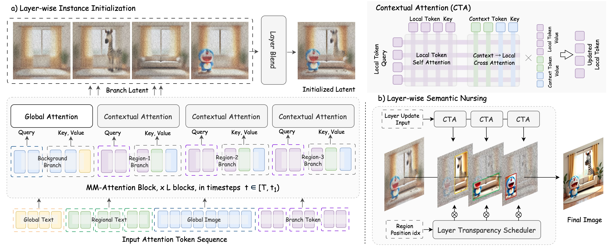
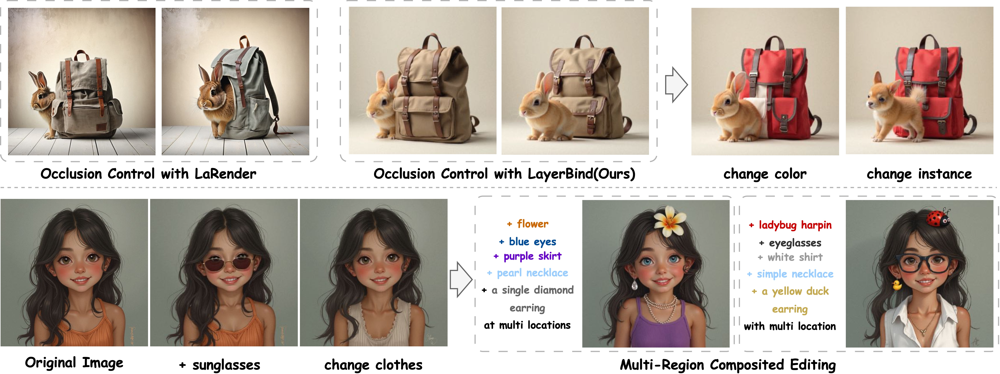
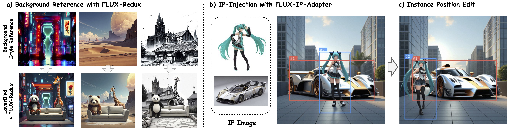

Layer-wise Instance Binding for Regional and Occlusion Control in Text-to-Image Diffusion Transformers
Abstract
Region-instructed layout control in text-to-image generation is highly practical, yet existing methods suffer from limitations: training-based approaches inherit data bias and often degrade image quality, while current techniques struggle with occlusion order, limiting real-world usability. To address these issues, we propose LayerBind. By modeling regional generation as distinct layers and binding them during generation, LayerBind enables precise regional and occlusion controllability. Motivated by the observation that spatial layout and occlusion are established at very early denoising stages, our method follows two phases: Layer-wise Instance Initialization and Layer-wise Semantic Nursing. The first phase creates per-instance branches with shared background context and fuses them early according to desired layer order to establish a structured latent layout. The second phase reinforces regional details and preserves occlusion order through layer-wise attention enhancement and a transparency scheduler. LayerBind is training-free, plug-and-play, and supports editable workflows such as changing per-region instances and rearranging visible orders.
Pipeline

Figure 2. Overview of the LayerBind pipeline. Layer-wise Instance Initialization splits early denoising into background and instance branches. Each instance branch generates independently with shared context and is fused to establish the initial layered layout. Layer-wise Semantic Nursing then performs sequential layer-wise attention updates to refine per-region semantics and maintain occlusion consistency throughout denoising.
Galleries

Application 1. Flexible occlusion control and instance modification. LayerBind supports controllable reordering of visible layers and targeted per-instance edits while preserving global scene coherence.

Application 2. Composited image editing with branch-wise instructions. By treating the original generation as shared background context, LayerBind enables localized edits with consistent layout and occlusion relationships.
BibTeX
@article{LayerBind2026,
title={Layer-wise Instance Binding for Regional and Occlusion Control in Text-to-Image Diffusion Transformers},
author={Ruidong Chen and Yancheng Bai and Xuanpu Zhang and Jianhao Zeng and Lanjun Wang and Dan Song and Lei Sun and Xiangxiang Chu and Anan Liu},
journal={CVPR},
year={2026}
}